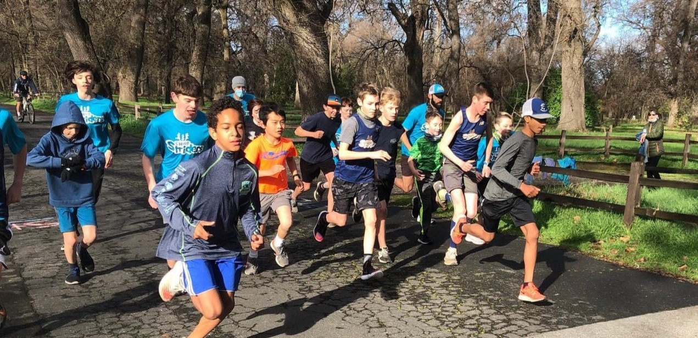
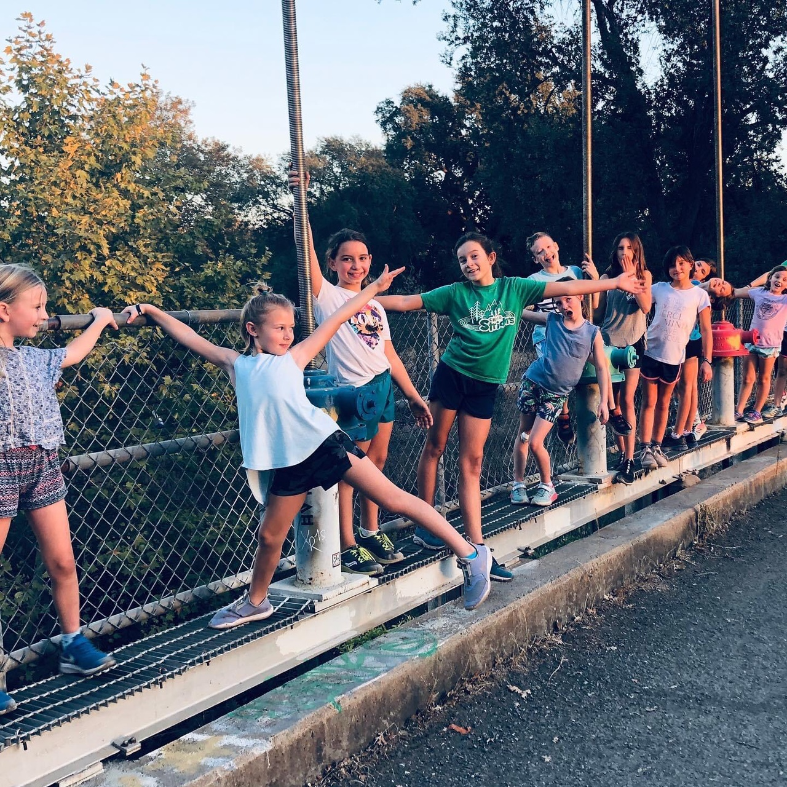
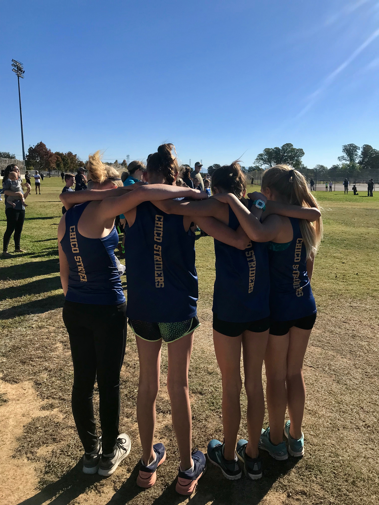
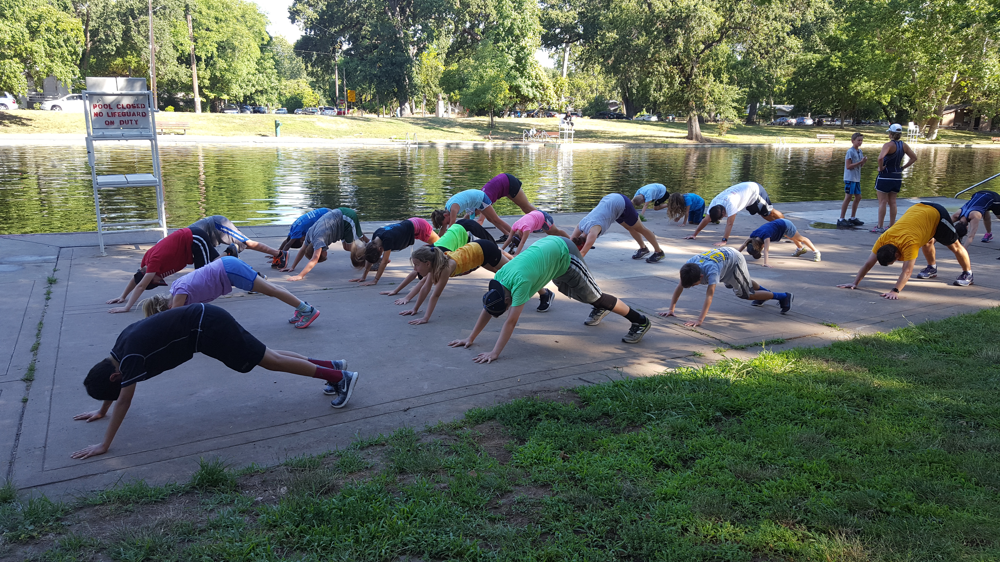
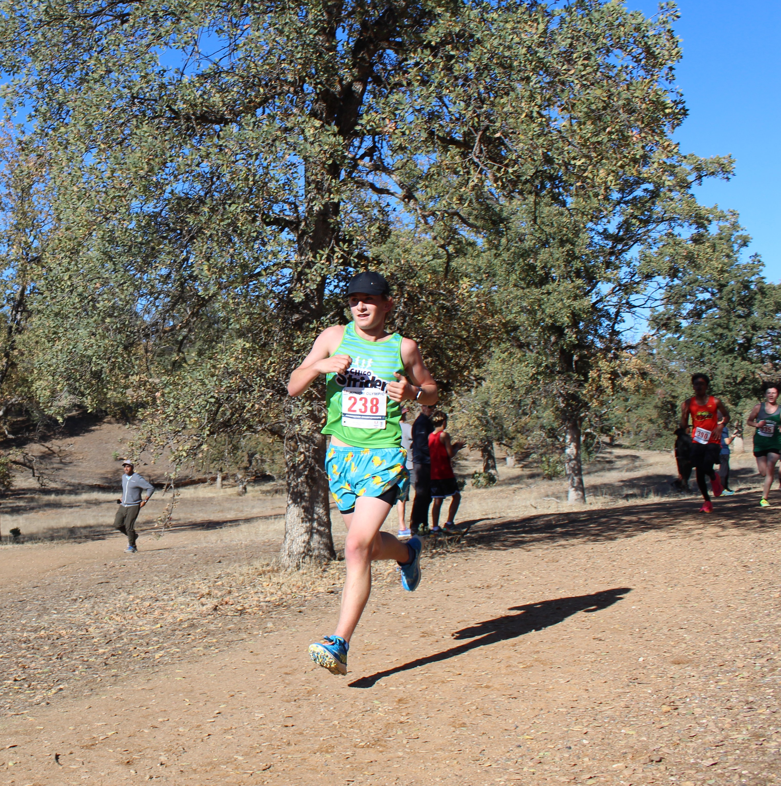

SPRING
Track & field
Build a strong foundation on the track. Explore speed, endurance, and friendly competition while finding the events you love.
A place on the team. A path of your own.
More than a running club. A community where young athletes build confidence, find their people, and discover what they can do.




Rooted in Chico. Running since 2017.
That first lap. A new friend. The finish line they didn’t think they could reach. Those are the moments we run for.
Chico Striders is a community-based nonprofit supporting young athletes at every level. Through thoughtful coaching, outdoor adventures, and a team that cheers each other on, we help kids build a love of running that lasts.
Meet the complete StriderA season for every stride
Build a strong foundation on the track. Explore speed, endurance, and friendly competition while finding the events you love.
Take your running beyond the track. Explore Chico’s parks, build endurance with teammates, and experience the joy of race day.
New trails, creek crossings, and plenty of games. Stay active with friends and get ready for the cross country season.
New to the team? Talk with a coach about trying a practice. Confirm current dates, fees, and availability before registering.

More than a personal best
We coach the whole athlete. Because the things kids learn on a run can carry them far beyond the finish line.
Endurance, speed, strength, and good running form.
Set goals, celebrate progress, and keep showing up.
Encourage others. Lead with kindness. Have fun.
Nutrition, hydration, rest, and recovery.
Keep the next generation moving
We don’t want finances to stand between a child and their love of running. Help support registration assistance, running shoes, and the Run Strong Scholarship for local student-athletes.
A local nonprofit.
A lasting impact.
For the parents at the starting line
New to running? New to Chico? We’re glad you’re here.
All parent FAQsNo. The club supports young runners at all experience levels. Contact a coach with your child’s grade and experience so they can help find the right group.
Yes. Email chicostriders@gmail.com with your child’s name, age, and experience. A coach will help arrange a visit and explain the required waiver.
Practices use local tracks and parks, with locations varying by season and age group. Registered families receive current practice and race details through TeamSnap. See program information or contact a coach to confirm the next practice.
Yes. Support is available to help with registration, with additional running shoe assistance for families in need. Contact Danny to learn more.
Your next chapter starts with a step
Let’s find the right group for your young runner.